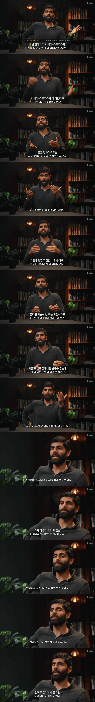

"지금 같은 2시간 짜리 기억상실증 환자 모델들도 밀레니엄 난제를 해결하고 있다."
"달리기 경주 트랙에서 옆돌기 회전하면서 달리는 미친놈이 우사인 볼트보다 빠르게 달리고 있는 거다."
"진짜 달리면 분명 더 빠를 거다."

"지금 같은 2시간 짜리 기억상실증 환자 모델들도 밀레니엄 난제를 해결하고 있다."
"달리기 경주 트랙에서 옆돌기 회전하면서 달리는 미친놈이 우사인 볼트보다 빠르게 달리고 있는 거다."
"진짜 달리면 분명 더 빠를 거다."
댓글
수집 당시 댓글 155개
· ㅇㅇ · 11.17 00:07:13
ㅇㅇ · 11.17 00:05:15
· ㅇㅇ · 11.17 00:05:28
· ㅇㅇ · 11.17 00:05:38
ㅇㅇ · 11.17 00:06:04
· ㅇㅇ · 11.17 07:22:25
ㅇㅇ · 11.17 00:06:51
ㅇㅇ · 11.17 00:08:18
ㅇㅇ · 11.17 00:09:28
ㅇㅇ · 11.17 00:10:23
ㅇㅇ · 11.17 00:10:55
ㅇㅇ · 11.17 00:12:24
처녀따개 · 11.17 00:15:40
ㅇㅇ · 11.17 00:19:37
ㅇㅇ · 11.17 00:20:04
· ㅇㅇ · 11.17 00:20:09
· ㅇㅇ · 11.17 00:21:43
ㅇㅇ · 11.17 00:21:17
ㅇㅇ · 11.17 00:22:43
황소불 · 11.17 00:24:03
실베현자 · 11.17 00:27:31
Doll · 11.17 00:28:32
ㅇㅇ · 11.17 00:34:28
· ㅇㅇ · 11.17 00:35:36
· ㅇㅇ · 11.17 00:36:14
2456778 · 11.17 00:34:36
ㅇㅇ · 11.17 00:35:11
· ㅇㅇ · 11.17 00:36:57
ㅇㅇ · 11.17 00:36:29
· ㅇㅇ · 11.17 00:36:44
ㅇㅇ · 11.17 00:37:03
· ㅇㅇ · 11.17 00:37:58
· ㅇㅇ · 11.17 00:38:05
· ㅇㅇ · 11.17 00:38:31
· ㅇㅇ · 11.17 00:45:40
· ㅇㅇ · 11.17 03:22:52
환란 전 교회 휴거 · 11.17 00:40:20
ㅇㅇ · 11.17 00:42:26
· ㅇㅇ · 11.17 00:44:00
· ㅇㅇ · 11.17 08:33:12
ㅇㅇ · 11.17 00:42:54
· ㅇㅇ · 11.17 00:47:46
· ㅇㅇ · 11.17 01:01:49
· (⌒,_>⌒) · 11.17 02:50:37
ㅇㅇ · 11.17 00:44:29
· ㅇㅇ · 11.17 00:52:00
· 링타로 · 11.17 02:21:32
· ㅇㅇ · 11.17 02:42:47
· 링타로 · 11.17 02:44:18
· ㅇㅇ · 11.17 02:48:00
· ㅇㅇ · 11.17 02:48:22
· ㅇㅇ · 11.17 02:49:00
· 링타로 · 11.17 02:51:12
· ㅇㅇ · 11.17 02:54:46
· ㅇㅇ · 11.17 04:19:26
ㅇㅇ · 11.17 00:52:35
ㅇㅇ · 11.17 01:20:34
ㅇㅇ · 11.17 01:21:26
ㅇㅇ · 11.17 01:21:27
노은지 · 11.17 01:33:56
· ㅇㅇ · 11.17 02:28:26
· 노은지 · 11.17 02:29:06
주소킹 · 11.17 02:05:55
링타로 · 11.17 02:21:06
ㅇㅇ · 11.17 02:22:04
· ㅇㅇ · 11.17 02:27:13
· ㅇㅇ · 11.17 02:28:49
· ㅇㅇ · 11.17 02:31:25
국가호소체 · 11.17 02:38:36
ㅇㅇ · 11.17 03:08:53
ㅇㅇ · 11.17 03:13:34
ㅇㅇ · 11.17 03:13:41
ㅇㅇ · 11.17 03:49:24
ㅇㅇ · 11.17 04:04:11
ㅇㅇ · 11.17 04:07:45
· ㅇㅇ · 11.17 04:20:55
ㅇㅇ · 11.17 04:12:29
ㅇㅇ · 11.17 04:14:28
· ㅇㅇ · 11.17 06:24:45
· ㅇㅇ · 11.17 10:42:43
dd · 11.17 04:39:26
ㅇㅇ · 11.17 04:50:17
dd · 11.17 06:19:35
ㅇㅇ · 11.17 06:39:45
ㅇㅇ · 11.17 06:43:22
ㅇㅇ · 11.17 07:02:33
ㅇㅇ · 11.17 08:26:08
· ㅇㅇ · 11.17 10:53:32
ㅇㅇ · 11.17 08:33:06
ㅇㅇ · 11.17 08:48:18
ㅇㅇ · 11.17 09:19:30
ㅇㅇ · 11.17 09:44:30
· 우인극단브렌트 · 11.17 11:14:39
ㅇㅇ · 11.17 09:56:01
ㅇㅇ · 11.17 10:52:01
ㅇㅇ · 11.17 11:53:04
ㅇㅇ · 11.17 11:57:36
ㅇㅇ · 11.17 12:28:33
ㅇㅇ · 11.17 13:03:41
ㅇㅇ · 11.17 13:31:17
ㅇㅇ · 11.15 19:12:47
AI마망 · 11.15 19:22:16
· 바다기린 · 11.15 19:39:00
· ㅇㅇ2 · 11.15 21:01:46
· ㅇㅇ · 11.17 00:03:10
· ㅇㅇ · 11.17 00:12:57
· ㅇㅇ · 11.17 00:30:31
ㅇㅇ · 11.15 19:31:13
웰빙킴 · 11.15 19:31:26
· ㅇㅇ · 11.16 23:55:49
Ai노력이정답이다
ASI2027 · 11.15 19:37:24
· ㅇㅇ · 11.16 23:56:06
ㅇㅇ · 11.15 19:40:40
· 디시콘발사대 · 11.15 19:43:36
ㅇㅇ · 11.15 19:46:00
· ㅇㅇ · 11.15 20:08:04
· 보추사랑꾼 · 11.15 20:34:30
· ㅇㅇ2 · 11.15 21:02:19
· ㅇㅇ · 11.17 00:01:17
· ㅇㅇ · 11.17 00:16:39
· ㅇㅇ · 11.17 02:04:56
ㅇㅇ · 11.15 19:53:01
벤치처형 · 11.15 20:08:03
Moonchild · 11.15 20:10:58
ㅇㅇ1 · 11.15 20:40:20
· ㅇㅇ · 11.15 20:54:13
Singularity. · 11.15 20:59:47
ㅇㅇ · 11.15 21:20:51
ㅇㅇ · 11.15 21:26:39
^-^ · 11.15 21:52:23
· ㅇㅇ · 11.16 23:55:39
Ai로봇:밥그릇압수 니네직업전부내꺼
천사다천사 · 11.15 22:07:26
ㅇㅇ · 11.16 01:20:26
· ㅇㅇ · 11.16 23:56:16
노력한사람들을바보로만들지마라로봇:ㅗ
ㅇㅇ · 11.16 01:50:19
ㅇㅇ · 11.16 23:55:31
Ai로봇:밥그릇압수 니네직업전부내꺼
ㅇㅇ · 11.16 23:56:07
노력한사람들을바보로만들지마라로봇:ㅗ
ㅇㅇ · 11.16 23:56:34
시험친사람들을바보로만들지마라로봇:ㅗ
trzn3 · 11.16 23:59:20
ㅇㅇ · 11.16 23:59:29
· ㅇㅇ · 11.17 02:24:29
· ㅇㅇ · 11.17 06:13:03
ㅇㅇ · 11.16 23:59:51
· ㅇㅇ · 11.17 00:06:09
· ㅇㅇ · 11.17 00:12:35
· ㅇㅇ · 11.17 01:52:22
ㅇㅇ · 11.17 00:00:35
· ㅇㅇ · 11.17 00:08:07
· ㅇㅇ · 11.17 00:12:25
· ㅇㅇ · 11.17 00:19:47
· ㅇㅇ · 11.17 00:35:39
· ㅇㅇ · 11.17 00:35:52
· ㅇㅇ · 11.17 06:49:28
· 천년군주 · 11.17 08:39:48
ㅇㅇ · 11.17 00:04:40